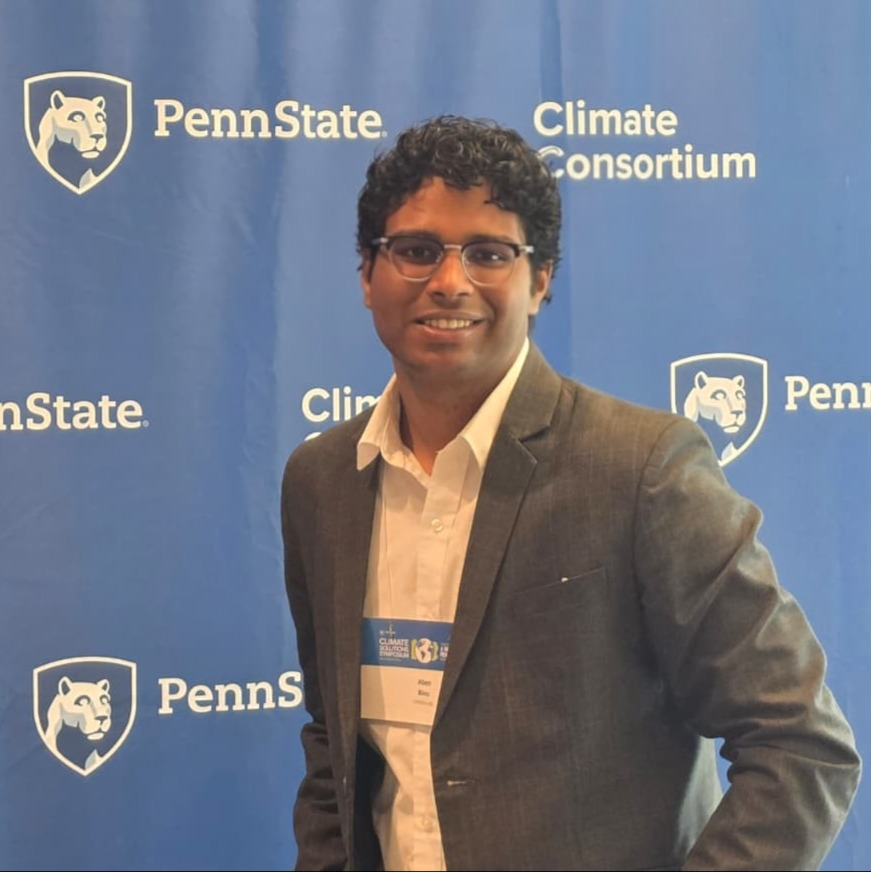

I am an Aerospace Engineering student at Penn State with a strong interest in space systems, modeling, and computation driven engineering. Rather than focusing solely on hardware or vehicle-level design, I am intentionally building a foundation in numerical methods, simulation, and data analytical problem solving skills I believe are essential to addressing modern aerospace and space-exploration challenges.
My academic path is shaped by fundamentals that emphasize the translation of physical phenomena into mathematical and computational models. I am particularly interested in numerical computation, system modeling, and the analysis of complex aerospace problems where closed form analytical solutions are limited or impractical. These interests naturally extend to challenges involving long-duration missions, extreme environments, and system-level trade-offs.
Currently, I am developing my skill set through CAD based design projects, engineering coursework, and team oriented design experiences, while continuously expanding my computational toolkit through numerical methods, programming, and modeling-focused electives. This combination allows me to bridge theory with implementation and cultivate a structured, systems-level engineering mindset.
My long-term goal is to contribute to space technology and exploration through roles centered on modeling, simulation, and systems analysis supporting the design, validation, and optimization of aerospace systems rather than operational flight roles. I am motivated by the challenge of enabling humanity's sustained presence beyond Earth through rigorous engineering, thoughtful design, and data driven decision making.